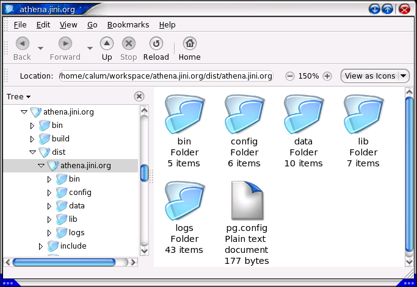
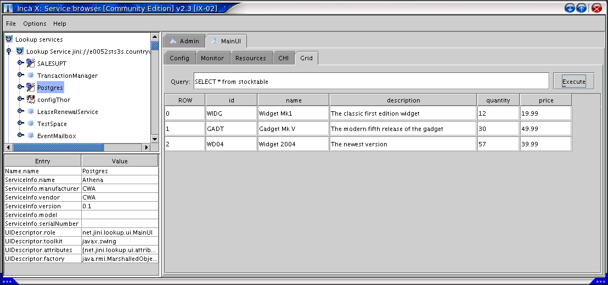

Tutorials
Getting Started
There are roughly 4 steps to getting Athena running
- Loading the properties into Thor and setting Athena's configuration file
- Having the correct Athena Connect available
- Ensuring you have access to the correct drivers or libraries
- Modifying Athena's runtime classpath
The examples set down below are assuming the usage of a JDBC or similar database as your datasource, if your needs are different then add an email to the Athena discusssion forums. I will explain how to get Athena to connect and proxy a PostgreSQL database
If you don't have a database on your machine see here for information on how to use Athena with an embedded database.
Thor properties
For JDBC, the Properties are as follows:
org.jini.projects.athena.service.name=Postgres
org.jini.projects.athena.service.numconnect=10
org.jini.projects.athena.service.groups=mygroup
org.jini.projects.athena.connect.type=SQL
org.jini.projects.athena.connect.driver=org.postgresql.Driver
org.jini.projects.athena.connect.url=jdbc:postgresql://host:port/database
org.jini.projects.athena.connect.username=<pguser>
org.jini.projects.athena.connect.password=<pgpass>
org.jini.projects.athena.connection.class=org.jini.projects.athena.connects.sql.SQLConnection
org.jini.projects.athena.connection.adhoctimeout=50000
|
It should be fairly self-explanatory as to what these properties mean, and you should be able to tailor these to your specific database.
You will need a dedicated connector, when you need to handle more complex things like Stored Procedures and complex SQL types.
Place these properties into a properties file and import them into Thor as a Properties Handler (see Thor ServiceUI). You may place these properties on any branch you wish
Once this is done, you'll need to setup your Athena configuration file - this specifies the name of your Athena instance (as will be shown in most ServiceUI browsers), jini groups that the service will join and information to find Thor and the branch in Thor where your system properties are held.
So assuming that we are joining the 'mygroup' group and we have loaded our properties into a Thor instance locatable through the name 'configThor' on the branch 'configuration/props/athena/pg'; the Jini configuration file will look like the following
org.jini.projects.athena {
athenaName="Postgres";
groups=new String[]{"mygroup"};
ui="clean";
thorName="configThor";
thorBranch="configuration/props/athena/pg";
}
|
Alternative to loading the data through a properties file, you can use the following XML as a template, given the information above
<root>
<branch name="configuration">
<branch name="props">
<branch name="athena">
<props name="pg">
<item name="org.jini.projects.athena.service.name" type="java.lang.String">Postgres</item>
<item name="org.jini.projects.athena.connect.username" type="java.lang.String">myuser</item>
<item name="org.jini.projects.athena.connect.type" type="java.lang.String">SQL</item>
<item name="org.jini.projects.athena.connection.class" type="java.lang.String">org.jini.projects.athena.connects.sql.SQLConnection</item>
<item name="org.jini.projects.athena.connect.password" type="java.lang.String">mypass</item>
<item name="org.jini.projects.athena.service.numconnect" type="java.lang.String">4</item>
<item name="org.jini.projects.athena.connect.url" type="java.lang.String">jdbc:postgresql://[host]:[port]/[database]</item>
<item name="org.jini.projects.athena.ui.clean" type="java.lang.String">true</item>
<item name="org.jini.projects.athena.connect.driver" type="java.lang.String">org.postgresql.Driver</item>
<item name="org.jini.projects.athena.connection.adhoctimeout" type="java.lang.String">50000</item>
<item name="org.jini.projects.athena.service.groups" type="java.lang.String">mygroup</item>
</props>
</branch>
</branch>
</branch>
</root>
|
Having the correct Athena connect available
For PostgreSQL (without any special behaviour necessitating a spcific PostgeSQL connect) you can use the athena jdbc Connect
Copy the athena_jdbc.jar to [athena_root]/lib and runathena_jdbc.sh (or runathena_jdbc.bat) to [athena_root]/bin
Then modify the runathena_jdbc.sh (or .bat file) and make sure that the DRIVERLIBS variable points to your jdbc driver and [athena_root]/lib/athena_jdbc.jar
Testing the Connect
Regardless of whether you have built Athena from sources, or downloaded the binary package, you will find the following directory structure

Figure 1) The Athena directory structure
The bin directory contains all the startup scripts, and these have to be run from the athena root directory i.e. . bin/runathena_xxxxxx.sh or bin\runathena_xxxxxx.bat. Never call runathena directly, build (or download) a connector for your datasource, and create a wrapper script that calls bin/runathena.sh or bin\runathena.bat after setting the appropriate driver libraries, which get inserted into your classpath. Generally, all the athena libraries and athena connector libraries go in athena_root/lib
You will, however, need to modify the ATHENACLASSPATH variable in the script to point to the util2_0.jar and serviceui-1.1.jar
The config directory contains a number of subdirectories: dialects, handlers and sets
Dialects directory
Athena looks in the config/dialects directory for your SystemConnection dialects and adds the name of your athena instance to the base directory of config/dialectscode>
In each instance directory, there are two more subdirectories - in and out. These represent different directories for in (before going to the host system) and out (after the call has executed on the host system) transforms, and contains a file call XSLTransforms.xml. The dialect directory does not need to exist - sometimes the connect will set up default dialects, for things like StoredProcedures.
Handler directory
Athena looks in the config/handler directory for your command parsers, anytime you pass an athena Command object to Athena, a handler must exist here. There is some information on how handlers are constructed here
Sets directory
Although not required, you can use the sets directory to hold your configurations and property information for Thor, that you use to connect Athena to your datasources.
For our postgres example above, assuming you have put in the appropriate connection parameters (host, user, password), loaded them into Thor, and placed the Jini configuration file in the athenaroot directory (and the file reflects your setup), you can now start Athena
Type
. bin/runathena_jdbc.sh pg.config
If everything went okay the following output should be shown:
. bin/runathena_jdbc.sh pg.config
-------------------------
Starting Athena
-------------------------
Ensure that your classes for your host connections are specified in the DRIVERLIBS environment variable
Creating Manager: config/exportmgr.config
04-May-2004 15:17:34 utilities20.export.DefaultExportManager <init>
INFO: Defining Service export rule for ExporterManager default
04-May-2004 15:17:35 utilities20.export.DefaultExportManager <init>
INFO: Defining Connection export rule for ExporterManager default
04-May-2004 15:17:35 utilities20.export.DefaultExportManager <init>
INFO: Defining Participants export rule for ExporterManager default
04-May-2004 15:17:36 utilities20.export.DefaultExportManager <init>
INFO: Defining ResultSet export rule for ExporterManager default
Initialising SystemManager
Eros could not be found....default logging will be provided
Creating default pool.......
|
Athena does not require Eros (distributed error logging service) to be running, (although it can be configured to exit if it is not available), but it does require Thor to be available. If thor is not available, or you have not specified the correct settings in your configuration file, Athena will exit and ask you to check the log files.
If Thor can be found, if you have specified a user interface to be shown, a window, similar to the one below, should be visible after few seconds

Figure 2) The Athena server-side GUI
Testing the connection
You can use Athena's serviceUI to check that the connections have been successful

Figure 3) The Athena Data Grid
Note: Please note that currently the serviceUI datagrid only supports passthrough to a SQL Database, full Athena Command support is scheduled for the next release
Back to Overview